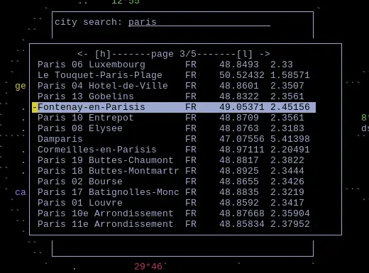

02 September 2026
Article published by: yam
Date of publication: 02 September 2026
sweetpotato labs have unlocked the ability to make better ui and have implemented it in your astro software ! we are still researching more precise methods and there is much to come
move page left or right with h or l, left or right. bask in the comfort of simplicity :3. soon will have the ability to easily narrow down results by country or state! but not yet!

Markdown file for this page: https://sweetpotato.press/news/prettier-paged-search-menu.md
This HTML page was generated by the Libreboot Static Site Generator.